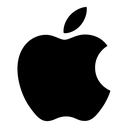

{{row.designation}}
Liaison : {{row.liaison}}
{{row.note}}
{{row.signalLabel}}
{{row.bookName}}
{{row.bookAr}}{{row.bookTr}}
{{row.bookDef}}
{{row.bookLetter}}
{{ex.label}}
{{ex.text}}
Remarque : {{row.bookNote}}
« Récitez le Qurân, car le jour de la Résurrection, il viendra intercéder en faveur de ses lecteurs assidus. » (Muslim)
Apprendre · Réviser
Le viatique du lecteurRègles de la Psalmodie du QUR’ÂN
Les types d’arrêts et les signes conventionnels : apprends-les avec les fiches, puis révise-les en QCM, en vrai ou faux et en texte à trous.
Complet, suffisant, correct ou mauvais : savoir où l’on peut s’arrêter, et quoi faire ensuite.
Les 10 signes des arrêts, leur règle de liaison et leur signal visuel.
Active le mode mémorisation pour cacher les réponses et te tester signe par signe.
{{row.designation}}
Liaison : {{row.liaison}}
{{row.note}}
{{row.bookName}}
{{row.bookAr}}{{row.bookTr}}
{{row.bookDef}}
{{row.bookLetter}}
Remarque : {{row.bookNote}}
Prêt à te tester ?
Active le mode mémorisation pour cacher les définitions et te tester type par type.
Al-Waqf est un court arrêt à la fin d’un mot dans le Coran, avec l’intention de poursuivre la lecture.
On ne peut pas s’arrêter à n’importe quel moment : il faut connaître les différentes sortes d’arrêts.
« Lié » veut dire : lié à ce qui suit.
Mode mémorisation : retrouve les réponses de tête, puis touche une ligne pour vérifier.
{{ty.translit}}
{{ty.def}}
Après l’arrêt : {{ty.after}}
À retenir : {{ty.note}}
{{ty.exNote}}
Prêt à te tester ?

Le robot Android est reproduit à partir d’une création de Google, utilisée selon les conditions de la licence Creative Commons Attribution 3.0.
Cette application a été développée par un auditeur du CIFOD dans le but de faciliter à sa propre personne ainsi qu’aux autres apprenants, la révision des cours de Psalmodie du QUR’ÂN. Elle n’a pas vocation à remplacer ni les cours en présentiel, ni ceux dispensés en ligne, mais aspire plutôt à devenir, inchâ Allah, un compagnon ludique sur le chemin de l’apprentissage du Tadjwîd.
Par ailleurs, l’application suit pas à pas l’ouvrage de référence en la matière au CIFOD (niveaux 4 et CPC) : Le Viatique du Lecteur, Règles de la Psalmodie du QUR’ÂN.
C’est une application web totalement gratuite et sans aucune publicité. De plus, elle fonctionne offline (sans connexion internet).
Nous espérons que ce modeste travail sera profitable à tous les apprenants.
Seigneur des cieux et de la Terre,
Je sais que mes œuvres sont légères,
Mais fais que celle-ci soit sincère,
Et pardonne à mes père et mère.
Amin.
{{qc.text}}
{{fb.title}}
{{fb.extra}}
{{fb.explain}}
{{res.score}} / {{res.total}}
{{res.message}}
{{m.prompt}}
Bonne réponse : {{m.answer}}
{{m.explain}}